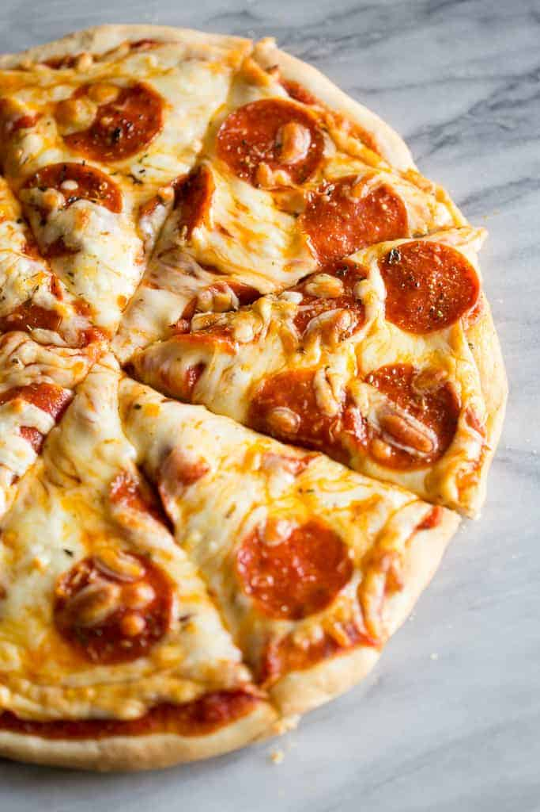

Pepperoni Pizza

Description
Most of you will consider me crazy for saying this, but I never used to care all that much for pepperoni pizza. I know it’s like the All-American thing but I have always preferred something more like a tomato basil or a spinach artichoke pizza. Then once upon a time I tried a pepperoni pizza that was covered with fresh oregano. It changed my entire outlook on pepperoni pizza.
I know it’s just a small change on the traditional pepperoni pizza but it makes a big difference to add that freshness to this classic. And the way it pairs with pepperoni is perfection. Oregano is often a key flavor in pizza so why not let it shine bright?
Here’s another thing you may think I’m crazy for saying, I like turkey pepperoni just as much, if not more than, regular pepperoni (my husband even thinks the same thing).
It has all the same flavors just a lot less fat, so you don’t end up with a pizza swimming in a layer of grease from an overdose of pepperoni fat.
Don’t get this pizza wrong, it’s definitely no low cal pizza, it’s just tweaked to suit my personal taste. If you like regular pepperoni too much to ever even dare reach for something else, by all means go ahead and use that.
I’m not here to change your taste in food or tell you only my way is the right way, I just share my opinion (and I’m very opinionated when it comes to food, but aren’t we all?). Turkey bacon on the other hand, don’t go there.
Ingeridents
- Pizza Dough (yields enough for 2 13-inch pizzas)
2 1/4 tsp active dry yeast
2 tsp granulated sugar
1 1/2 cups warm water , 110 degrees, divided
3 Tbsp olive oil , plus more for brushing
1 1/2 tsp salt
1 tsp white vinegar
3 1/2 - 4 cups bread flour
- Pizza Sauce (yields enough for 3 large pizzas)
2 (8 oz) cans tomato sauce
1/4 cup tomato paste
1 1/2 Tbsp extra virgin olive oil
1 1/2 tsp honey
2 tsp chopped fresh oregano
2 tsp chopped fresh basil
1/4 tsp dried thyme (or 3/4 tsp fresh)
1 clove garlic , finely minced
Salt and freshly ground black pepper , to taste
- Topping (yields enough for 1 13-inch pizza)
1 Tbsp olive oil
1 clove garlic , finely minced
2 cups shredded mozzarella cheese (8 oz)
1/4 cup finely shredded parmesan cheese (1 oz)
20 slices pepperoni (I recommend turkey, it's just as good as the regular)
2 Tbsp fresh oregano (chopped if using larger leaves)
Red pepper flakes , for serving (optional)
Steps
- For the pizza dough:
- In the bowl of an electric stand mixer, combine yeast, 2 tsp sugar and 1/2 cup warm water and whisk until yeast has dissolved. Allow to rest 5 minutes. Add in remaining 1 cup warm water, olive oil, salt and vinegar. Fit mixer with whisk attachment, set on low speed and slowly add in 1 3/4 cups of the flour and mix until combined.
- Switch to a dough hook and slowly add in remaining 1 3/4 cups flour, then knead mixture on medium-low speed about 5 - 7 minutes, adding in up to an additional 1/2 cup flour as needed, until dough is smooth and elastic (dough should be slightly sticky but should not stick to a clean fingertip). Cover bowl with plastic wrap and allow to rest in a warm place until doubled, about 1 1/2 hours.
- For the pizza sauce:
- Combine all ingredients in a bowl. Preferably let rest 30 minutes (while dough is rising) to allow flavors to meld.
- To assemble pizza:
- Place a pizza stone in oven and preheat oven to 450 degrees. While oven preheats assemble pizza. Punch down pizza dough (divide into two equal 16 oz portions, freeze one in a resealable bag for a later use or make 2 pizzas right away). Place a sheet of parchment paper over a pizza peel, then lightly dust parchment paper with flour. Pat/roll and stretch dough on pizza peel to a 13-inch round, while creating a rim along edge of dough.
- Using a fork (without piercing all the way through) pierce dough many times over surface. In a small bowl stir together 1 Tbsp olive oil with 1 clove garlic and brush evenly over top and edges of pizza, then evenly spread about 2/3 cup of the pizza sauce over pizza (leaving rim uncoated).
- Top evenly with cheeses (again leaving rim uncoated) and pepperoni slices (if using turkey pepperoni, I recommend adding halfway through baking). Carefully slide pizza (on parchment paper) to preheated pizza stone in oven and bake 12 - 15 minutes until crust is golden. Remove from oven, sprinkle top with oregano and optional red pepper flakes. Cut into slices and serve.